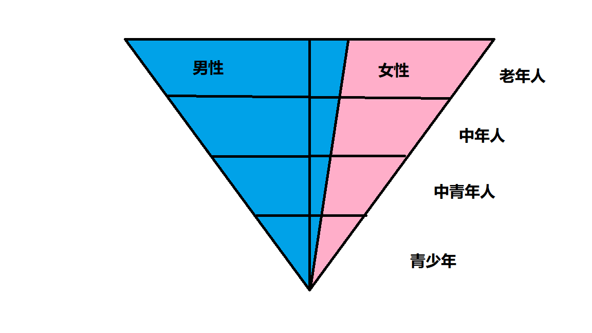

中国的经济发展模式与人口红利 （二）
上一篇讲到了中国现行的经济发展模式是依靠人口红利实现的。那么我们逐渐深挖一下。
人口红利意味着长时间的工作以及微薄的收入，而出卖人口红利（劳动力）的国家，男劳动力和女劳动力是不等价的。男劳动力不存在月经、产假、不存在亲手抚养小孩的劳动，因此男劳动力的产出更高。所以相对与女性劳动力，男性劳动力的相对价值更高。
因此，在出卖人口红利的国家，男劳动力的地位更高，包括不限于出生比例、继承权、选举权、升职机会.etc
但是每一个男性劳动力的出生，背后都有一个十月怀胎的母亲。
那么成为一个母亲的成本又是多少呢？
现在不论男女基本都会接受义务教育，而2021年社会平均工资是6848元。

如果一个女性选择不工作去生小孩、带小孩，因为一胎没赚到的价格很容易就能算出来。
6848 x 10个月 = 68480元
二胎 6848 x 20个月 = 13,6960元
三胎 6848 x 30个月 = 20,5440元
当然，人们不会把没赚到的钱当成是因为生育所以没赚到的钱，而是会把它当作本来就没有的钱 。这个钱叫做机会成本，但也是成本的一种。
上一辈的情况
上上辈的人，家里普遍生育3-8个子女。
而独生子女政策颁布后，一个独生女想要生3-8个子女，怎么想都不可能。
人口红利不存在的情况
因为女性相对男性劳动力价值更低，所以大部分家庭都会选择生男婴而不是女婴。
相对于更少的女婴长大后，要维持人口结构是不可能完成的任务。因此中国未来的人口结构会处于倒金字塔形状。

中老年人相对于青少年人数过多，导致缴纳的社保多，领取的社保少近于无（延迟退休）
而一直保持现在这种社会制度，那么国家只有消失这一条路可走。人口都没了，还谈什么国家呢。那么由此可知，社会制度是一定会进行变革的，那么该怎么变呢？
数量更少的具有生育能力的女性（18-35）
人说，少年强则国强。
其实，决定了一个国家未来发展的是这个国家的弱者——最容易遭受性犯罪的那些青春靓丽的妹子。
如果国家和社会不能给这些女性安全感，让她们安心生育的环境。那么她们就会拒绝恋爱、结婚、生育。
而女性大范围的拒绝恋爱、结婚、生育，那么老龄化社会就不可避免了。

女性劳动力相对于男劳动力低下，是先天性生理条件决定的。所以不能责怪资方优先选择男劳动力。
而怎么避免女性大范围的拒绝恋爱、结婚、生育呢？
首先要打击彩礼，让生育女性的家庭无利可图。因为男性劳动力价值更高，这样家庭就会生育更多的男婴。
然后开放三胎，提倡女性回归家庭。让女性被公司遭受更严重的性别歧视，最终不愿意生育女婴。
开个玩笑。
越贬低女性的地位、制造更多性别不平等的政策固然想法很好，但是实施上会造成生育更多的男婴。而更多的男婴，也就意味着更少的女婴，成年后会导致更少的婴儿出生。这会加剧社会老龄化，不会减轻老龄化。
毕竟现在的人都太精明了，都愿意做对自己有利的选择，而不愿意充当为国牺牲的人。如果现在的人上班都是为爱发电，不需要工资，那么就没有那么多问题了。
苏轼在《与朱鄂州书一首》中说：荆湖北路（今湖北一带），“岳、鄂间田野小人，例只养二男一女，过此辄杀之。”东坡被贬黄州（今湖北黄冈县），见“黄州小民，贫者生子多不举，初生便于水盆中浸杀之”（《东坡志林》）。朱熹父亲朱松《韦斋集·戒杀子文》说，在江西婺源，民“多止育两子，过是不问男女，生辄投水盆中杀之。”福建一带杀溺幼婴的风俗最盛。朱松在福建为官，“闻闽人不喜多子，以杀为常……虽有法而不能胜。”王得臣《麈史·风俗》谓，在一般情况下，“闽人生子多者，至第四子则率皆不举”，“若女则不待三，往往临蓐，以器贮水，才产即溺之，谓之洗儿。”据《道山清话》载，宋神宗、哲宗时的宰执大臣章惇，家在建州浦城（今属福建），“初生时，父母欲不举，已纳水盆中，为人敕止。”《宋会要辑稿·刑法二》载，江南东路（今江苏、安徽、江西一带），“东南数州之地……男多则杀其男，女多则杀其女，习俗相传，谓之薅子，即其土风。宣、歙（今安徽）为基，江宁（今南京）次之，饶、信（今江西）又次之。”而两浙路（今上海浙江一带）一些地方杀婴弃婴之风也很严重，“衢、严（今浙江建德）之间，田野之民，每忧口众为累，及生其子，率多不举。”
从上述史料归纳，宋代东南地区，主要包括今天的湖北、江西、安徽、浙江、福建等地，溺杀婴儿的现象与风俗已相当普遍。“不举子”之风严重败坏了社会的伦理道德。
人口红利的根源
人口红利是因为女性相对男性劳动力价值更低。因此会生育更多的男婴。
一旦女性不再愿意生育那么多的男婴，那么人口红利就不在了。
人口红利至少受两层剥削，一层是国外的资本家（出口型国家），一层是国内资本家。
如果人口能不受这么多剥削，能养得起小孩。
那么老龄化就能得到缓解。
总而言之，就是剥削的程度让劳动人民无法抚养下一代。